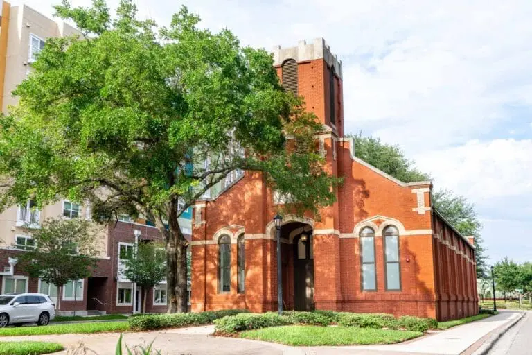
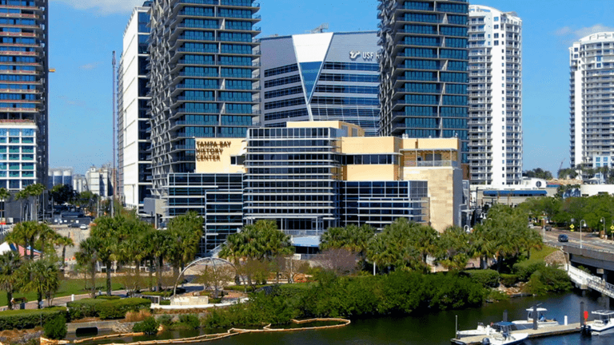
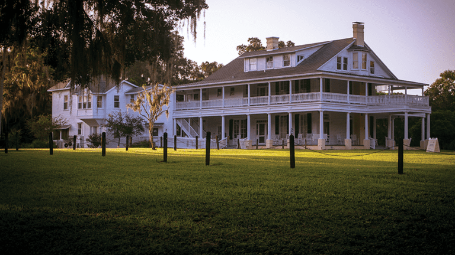
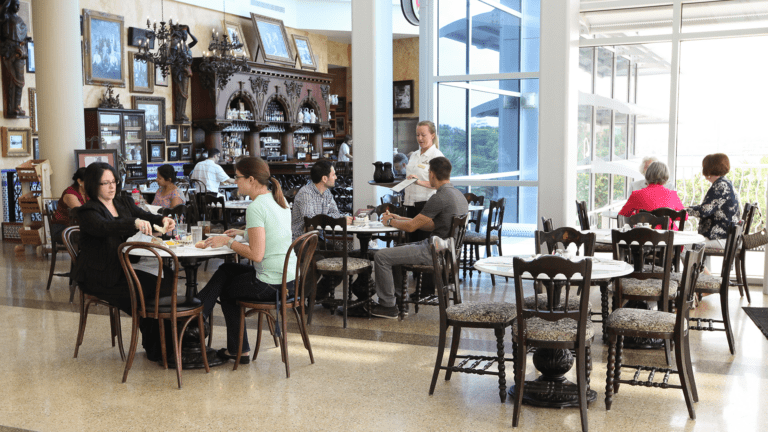

Looking For Something To Do?

Black History Tour
Explore the stories, landmarks, and heritage that shaped Tampa’s African American community.
Get Tickets

History Center Highlights Tour
A guided journey through key museum exhibits featuring artifacts and local history.
Get Tickets

Chinsegut Hill Retreat
Visit one of Tampa Bay’s oldest estates and learn about its unique past.
Get Tickets

Columbia Café Experience
Enjoy classic Cuban dishes and Florida culinary history at the museum café.
Learn More
Touchton Map Gallery Tour
See rare maps and artifacts that trace Florida’s past through centuries.
Learn More